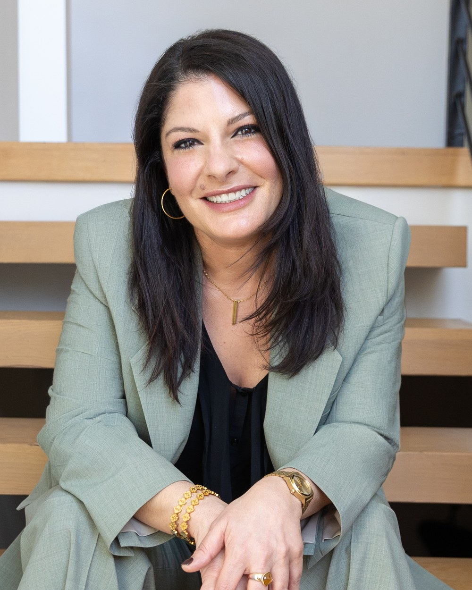

Rima Dairi Morris.
Founder & CEO
rima@thetalentdept.comRima Morris is the Founder & CEO of The Talent Dept. and a veteran talent booking executive with over 20 years of experience across television, podcasts, and global media.
She began her career at The Late Show with David Letterman, booked A-list talent at Jimmy Kimmel Live!, and spent nearly a decade at The Tonight Show Starring Jimmy Fallon, where she became Supervising Producer overseeing all celebrity guest booking.
Rima later built Spotify’s first in-house podcast booking division, leading talent strategy and acquisition for shows including What Now? with Trevor Noah, The Louis Theroux Podcast and many others. She is known for her deep relationships, sharp instincts, and collaborative approach.